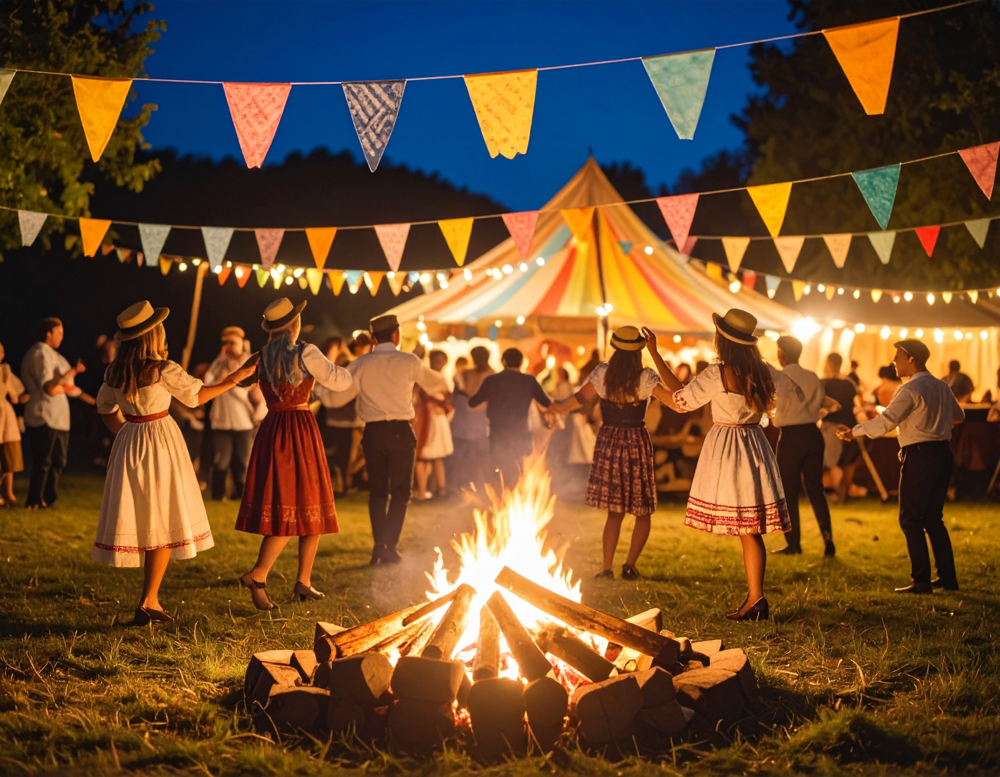
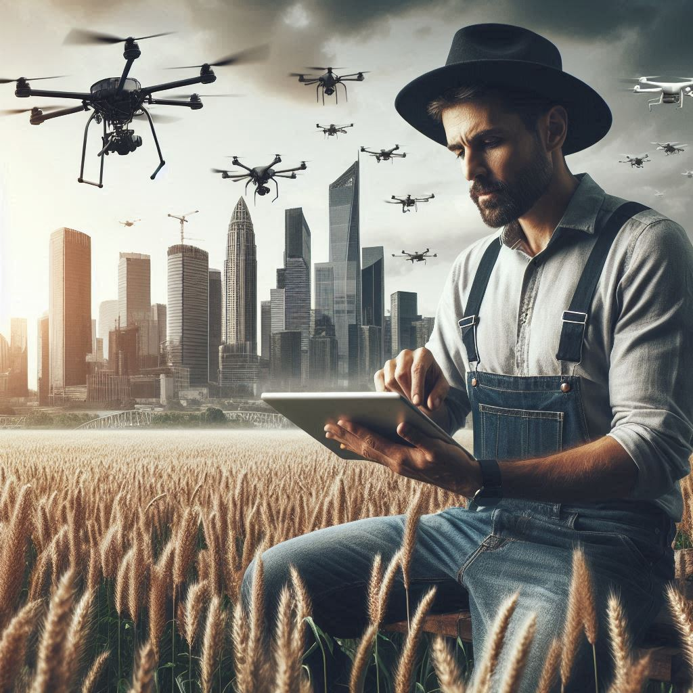

Conexão Campo-Cidade

O campo e a cidade parecem mundos diferentes, mas caminham lado a lado.
Enquanto o campo planta, a cidade colhe ideias. Enquanto a cidade inova, o campo mantém viva a tradição.
Nossa festa celebra essa conexão poderosa — onde os alimentos, os saberes e os valores passam de mãos em mãos, criando pontes entre quem cultiva e quem consome, entre quem preserva e quem transforma.
Aqui, o som da sanfona encontra o barulho dos carros. A terra vermelha encontra o concreto. A simplicidade do interior encontra o ritmo da cidade. E juntos, criam algo novo, forte e cheio de vida.
O Que Une Campo e Cidade

Alimentos
O campo planta, a cidade consome. Essa troca alimenta a todos.
O alimento é o elo mais direto entre o campo e a cidade. Cada grão colhido, cada verdura cultivada com cuidado, percorre um caminho que une quem planta com quem consome. No campo, há trabalho duro, conhecimento passado entre gerações e respeito pela terra. Na cidade, há o preparo, o consumo e a valorização desses produtos. É essa conexão que garante comida saudável nas mesas urbanas e renda para milhares de famílias rurais.

Cultura
Tradições rurais influenciam festas, músicas e costumes urbanos.
A cultura rural pulsa nas tradições que a cidade abraça. Festas juninas, quadrilhas, comidas típicas e músicas sertanejas fazem parte do calendário urbano, resgatando raízes que vêm do interior. Mais do que entretenimento, esses costumes carregam história, identidade e um sentimento de pertencimento que aproxima as pessoas, mesmo que vivam em ambientes tão diferentes.

Tecnologia
Inovações urbanas ajudam o campo a produzir mais e melhor.
A tecnologia moderna rompeu as barreiras entre o campo e a cidade. Hoje, aplicativos, drones, tratores inteligentes e sensores de umidade são ferramentas comuns nas lavouras. Grande parte dessas inovações nasce nos centros urbanos, mas é no campo que elas mostram seu verdadeiro valor: otimizam o plantio, economizam água, aumentam a produtividade e protegem o meio ambiente. É a prova de que cidade e campo evoluem melhor quando trabalham juntos.